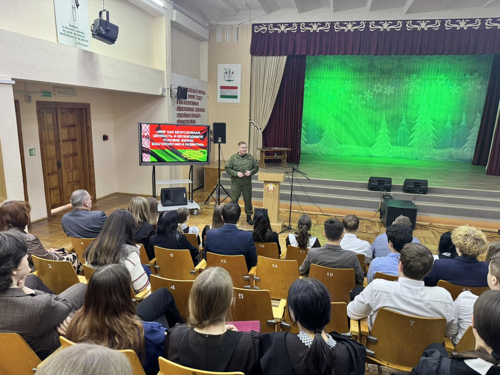
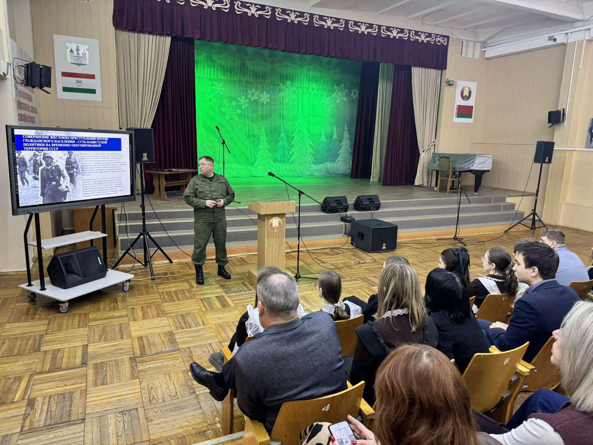
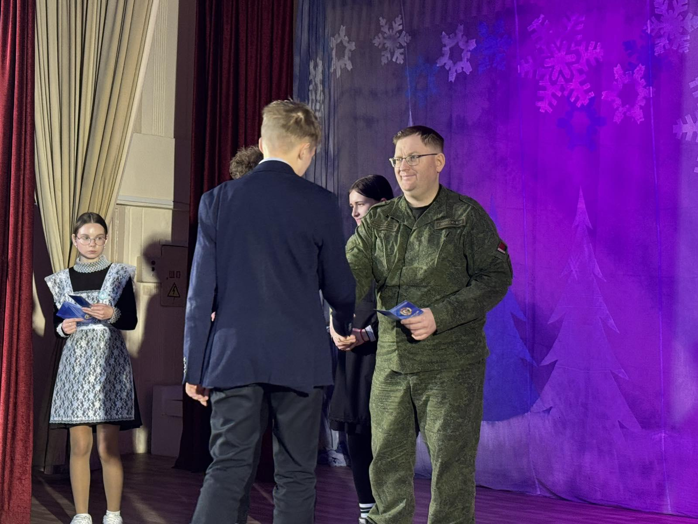
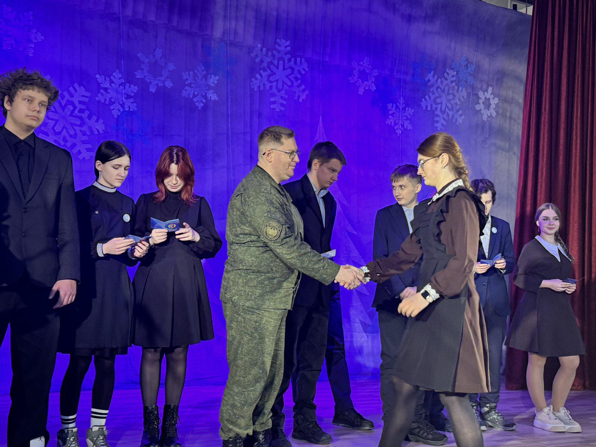

БЫТЬ ДОСТОЙНЫМ ГРАЖДАНИНОМ РЕСПУБЛИКИ БЕЛАРУСЬ – ЗНАЧИТ БЫТЬ ГОТОВЫМ В ЛЮБУЮ МИНУТУ ВСТАТЬ НА ЗАЩИТУ РОДИНЫ
29 января в гимназии в рамках информационно-образовательного проекта «Школа Активного Гражданина» с учащимися 9-11 классов состоялся важный и содержательный разговор на тему: «Быть достойным гражданином Республики Беларусь – значит быть готовым в любую минуту встать на защиту Родины».

В мероприятии принял участие заместитель начальника по идеологической работе центра технического обеспечения 72 гвардейского обледенённого учебного центра подготовки прапорщиков и младших специалистов. Перед выступил особый гость — подполковник Кумяков Михаил Михайлович, В ходе встречи Михаил Михайлович поделился своим опытом службы, рассказал о ценностях, которые лежат в основе патриотизма, и о том, что значит в современном мире быть настоящим защитником своей страны.

Особый смысл мероприятию придало торжественное вручение членских билетов ДОСААФ десятиклассникам — символ готовности к служению Отечеству, объединяющий военно-патриотическое воспитание, технические знания и физическую подготовку.

Заместитель директора по учебной работе Волчанин В.В. также вручил гимназистам смарт-билеты БРСМ, подчеркнув важность вовлечённости молодёжи в общественную жизнь страны .Такие мероприятия особенно ценны тем, что соединяют идеологическое содержание с конкретными шагами вовлечения молодёжи в общественную жизнь.
